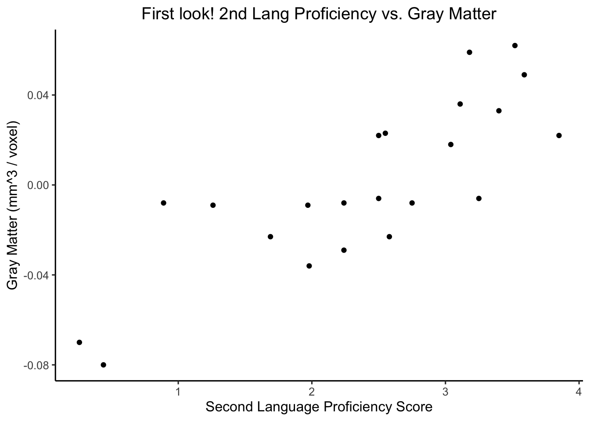
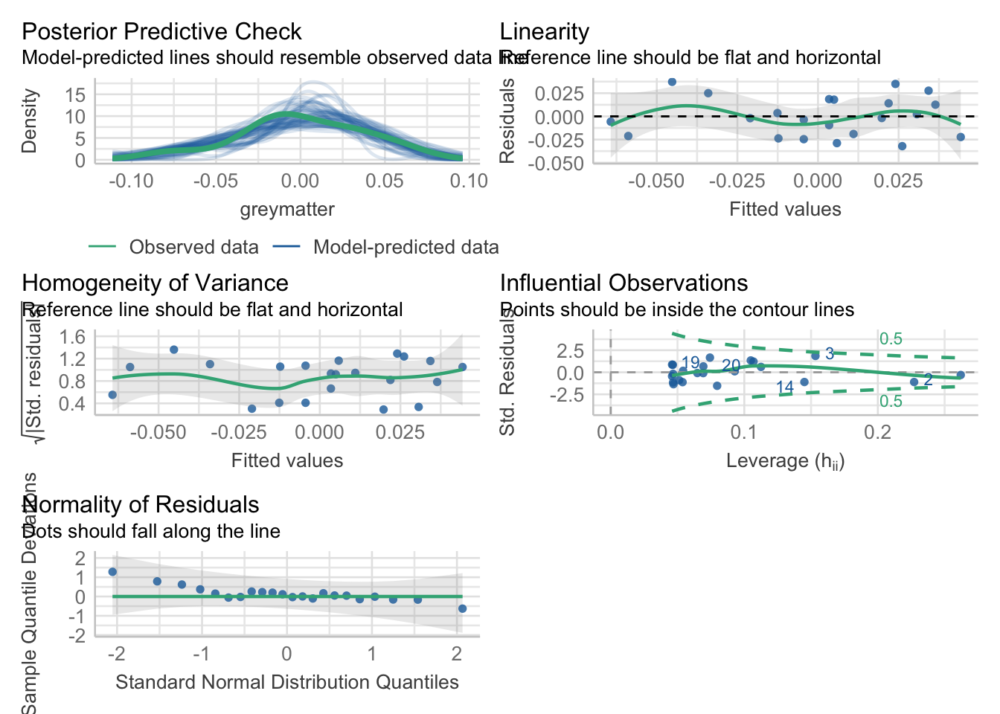
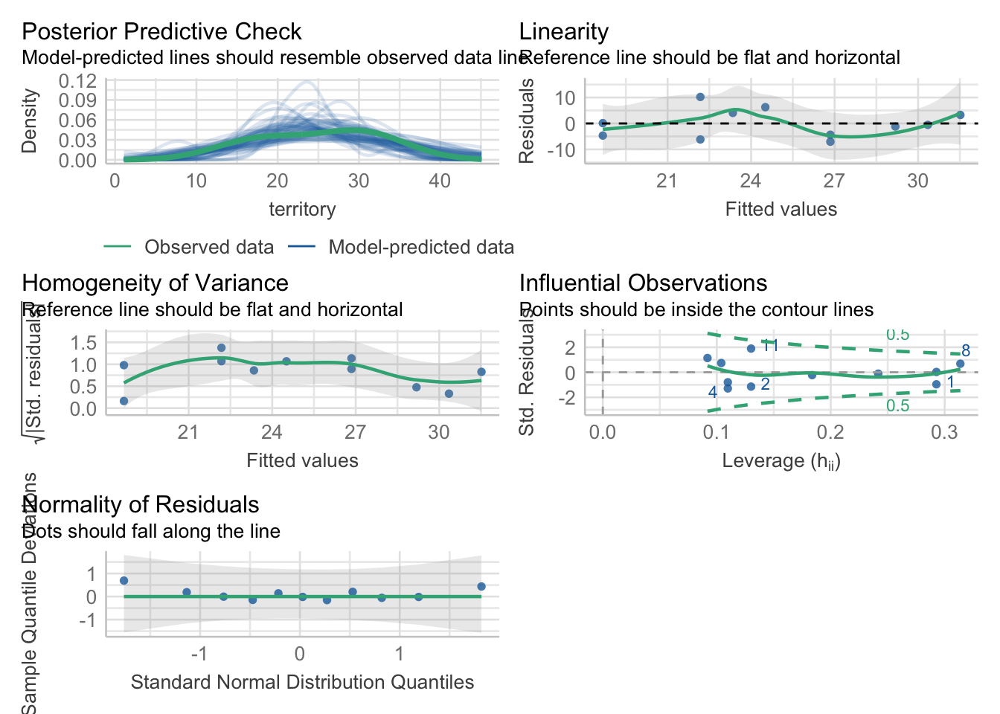
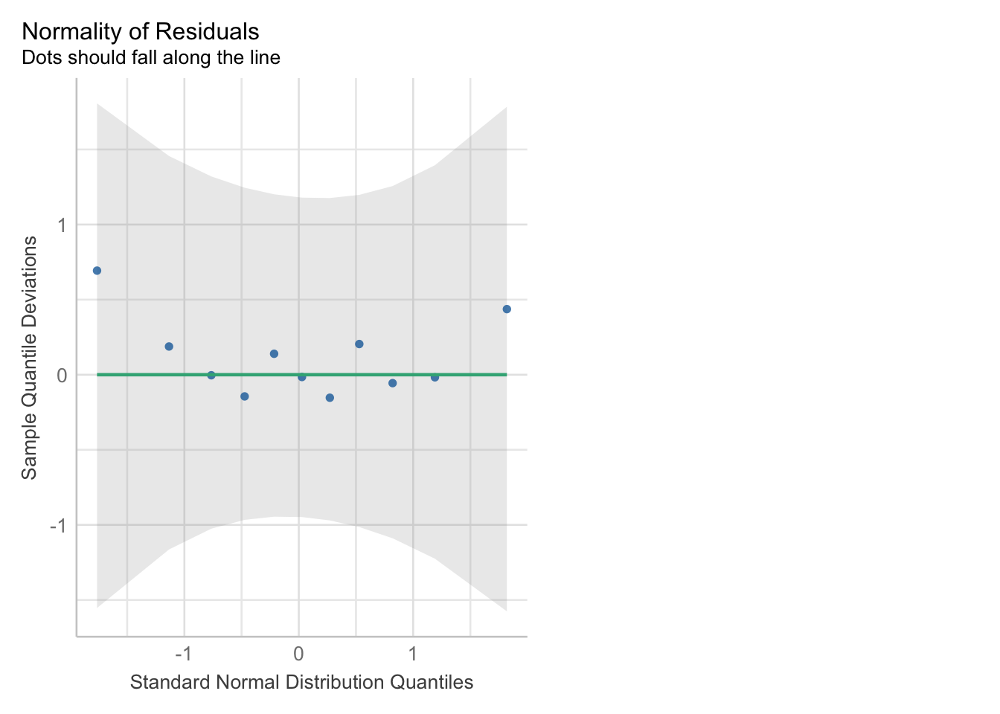
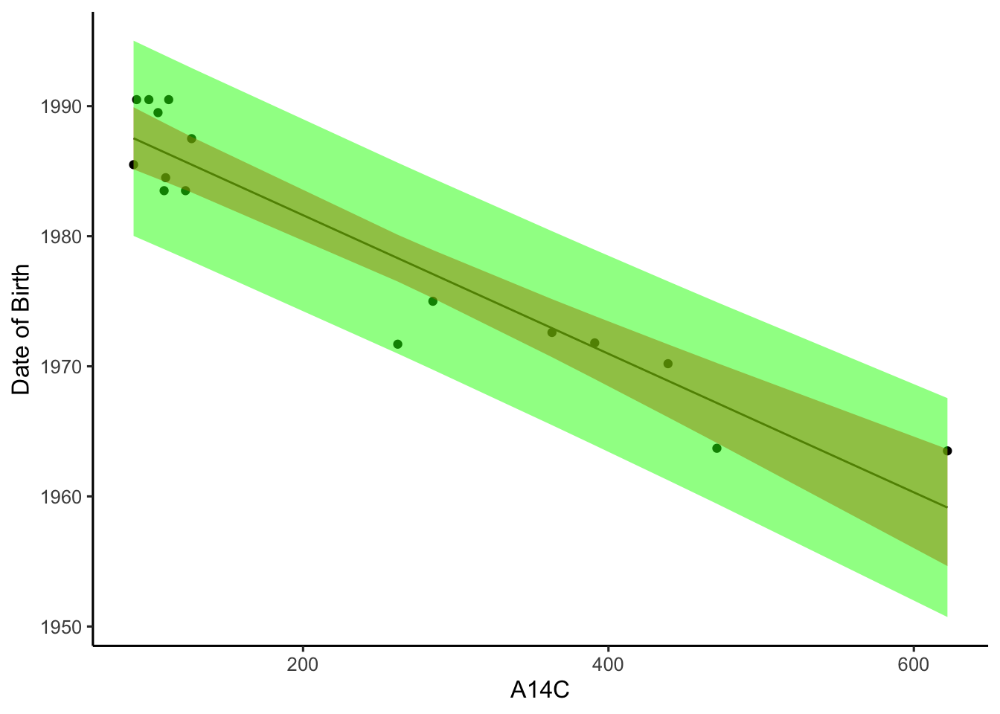

# Install packages
library(readr)
library(ggplot2)
library(performance) # for checking assumptions
library(broom) # for augment function
# Set ggplot theme as classic
theme_set(theme_classic(base_size = 12))homework_5
Correlation And Regression Homework
1. Correlation - W&S Chapter 16
a. Display the association between the two variables in a scatter plot.
# read in data
brain_data <- read_csv("data/chap16q15LanguageGreyMatter.csv")Rows: 22 Columns: 2
── Column specification ────────────────────────────────────────────────────────
Delimiter: ","
dbl (2): proficiency, greymatter
ℹ Use `spec()` to retrieve the full column specification for this data.
ℹ Specify the column types or set `show_col_types = FALSE` to quiet this message.# create a scatter plot with proficiency on the x axis, greymatter on the y axis
ggplot(data = brain_data,
mapping = aes(x = proficiency, y = greymatter)) +
geom_point() +
labs(x = "Second Language Proficiency Score",
y = "Gray Matter (mm^3 / voxel)",
title = "First look! 2nd Lang Proficiency vs. Gray Matter") +
theme(plot.title = element_text(hjust = 0.5))
Calculate the correlation between second language proficiency and gray-matter density.
# calculate correlation with cor()
cor(x = brain_data$proficiency,
y = brain_data$greymatter)[1] 0.8183134# calculating correlation by z transforming
brain_data_z <- data.frame(
proficiency_z =
(brain_data$proficiency - mean(brain_data$proficiency)) / sd(brain_data$proficiency),
greymatter_z =
(brain_data$greymatter - mean(brain_data$greymatter)) / sd(brain_data$greymatter)
)
lm_z <- lm(greymatter_z ~ proficiency_z,
data = brain_data_z)
lm_z # see coefficient for correlation
Call:
lm(formula = greymatter_z ~ proficiency_z, data = brain_data_z)
Coefficients:
(Intercept) proficiency_z
-3.037e-17 8.183e-01 The calculated correlation is \(0.8183134\)
c. SKIP
d. What are your assumptions?
- Validity: Here we are assuming that differences in cubic mm of gray matter per voxel is a good measure of changes to brain structure.
- Representativeness: Based on the question posed in the prompt, we are assuming that the 22 Italian speakers who learned English as a second language are representative of all people who learn a second language.
- Independence of Errors: Here we are assuming each observation/replicate is independent.
For the rest of the assumptions apply check_model from the performance package:
brain_lm <- lm(greymatter ~ proficiency,
data = brain_data)
check_model(brain_lm)
Other Assumptions:
- Model captures features in the data: Looks good based on Posterior Predictive Check
- Additivity and Linearity: Here we are assuming the relationship is actually linear. Fitted values line appears to be relatively flat in the Linearity test above. Looks good!
- Equal Variance of Errors: Residuals appear not to show a pattern. Looks good!
- Normality of Errors: Assuming errors are normally distributed. It appears this might not be the case based on the QQ plot, but we’ll let it slide for the hw.
- Minimal Outlier Influence: Assuming no outliers have excessive influence. Looks good above!
e. Does the scatter plot support these assumptions? Explain
I don’t think the scatter plot supports all of these assumptions as things such as validity, representativeness, and independence of errors are assumptions about our experimental design and sampling. I would argue that the scatter plot does support the other assumptions, as the data from the scatter plot can be transformed/processed into the model assumption testing plots we used above, which supported many of our assumptions.
f. Do the results demonstrate that second language proficiency affects gray-matter density in the brain? Why or why not?
No. To start, we cannot yet make causal inference with just this data. We see a correlation in our sample which may indicate a correlation in the real world, but we can’t say that one affects the other. Also, I would argue that our assumption that the 22 Italian speakers who learned English as a second language are representative of all people who learn a second language is a poor assumption. Thus, I believe we can only say there is potentially a correlation between Italian proficiency of English as a second language and grey matter in the brain.
2 (From Fieberg)
A. Fit a linear model using R that could be used to predict territory size from a lizard’s bite force.
library(abd)Loading required package: nlmeLoading required package: latticeLoading required package: gridLoading required package: mosaicRegistered S3 method overwritten by 'mosaic':
method from
fortify.SpatialPolygonsDataFrame ggplot2
The 'mosaic' package masks several functions from core packages in order to add
additional features. The original behavior of these functions should not be affected by this.
Attaching package: 'mosaic'The following objects are masked from 'package:dplyr':
count, do, tallyThe following object is masked from 'package:Matrix':
meanThe following object is masked from 'package:ggplot2':
statThe following objects are masked from 'package:stats':
binom.test, cor, cor.test, cov, fivenum, IQR, median, prop.test,
quantile, sd, t.test, varThe following objects are masked from 'package:base':
max, mean, min, prod, range, sample, sum#str(LizardBite)
lizard_lm <- lm(territory ~ bite,
data = LizardBite)B. Evaluate the assumptions of the model using graphical methods. Be sure to comment on what you are looking for in each plot (e.g., the assumption you are looking to evaluate and what would constitute an assumption violation).
check_model(lizard_lm)
check_model(lizard_lm, check= "qq")
Assumptions:
- Model captures features in the data: Looking to see that the data simulated by the model matches our actual data pretty well. In general, it does based on the Posterior Predictive Check above, although the model did generate some high peaks in some simulations.
- Additivity and Linearity: Here we are assuming the relationship is actually linear. Fitted values line appears to be relatively flat in the Linearity test above. If the line was largely curved or not angled in any pattern, this likely wouldn’t be a linear relationship. Looks good!
- Equal Variance of Errors: Checking for whether the residuals (error) form any pattern around the fitted valued. They shouldn’t, as this would suggest heteroscedasticity. Residuals appear not to show a pattern. Looks good!
- Normality of Errors: Assuming errors are normally distributed. This is checked by looking at the quantile-quantile (QQ) plot so see if the data falls far from the line. Looks good!
- Minimal Outlier Influence: Assuming no outliers have excessive influence. Looking at the Influential Observations plot above shows any points outside the contours line, particularly those with a lot of leverage. If there were, this assumption would fail. Looks good above!
C. Interpret the intercept and slope parameters in the context of the problem.
lizard_lm
Call:
lm(formula = territory ~ bite, data = LizardBite)
Coefficients:
(Intercept) bite
-31.54 11.68 The intercept tells us that when bite force is 0, the model predicts territory size will be -31.54 (I don’t know units). This doesn’t make logical sense, because territory cannot be less than 0 in the real world.
The slope tells us that for each unit increase in bite force (each added 1N of force), the model predicts the territory size will be 11.68 units larger.
D. Provide a confidence interval for the slope parameter and interpret the confidence interval. Take a look at confint()
confint(lizard_lm) 2.5 % 97.5 %
(Intercept) -84.728586 21.65001
bite 0.709847 22.64474The 95% confidence interval tells us that there is a 95% probability that the true slope (change in territory per unit bit) is between 0.709847 and 22.64474. If we were to create a sampling distribution of slopes, we would expect 95% of these slopes to fall within 0.709847 and 22.64474.
E. Explain what the standard error associated with the slope parameter tells us. Your explanation should include reference to a sampling distribution, and you should define what this term means.
summary(lizard_lm)
Call:
lm(formula = territory ~ bite, data = LizardBite)
Residuals:
Min 1Q Median 3Q Max
-7.0472 -4.5101 -0.5504 3.6689 10.2237
Coefficients:
Estimate Std. Error t value Pr(>|t|)
(Intercept) -31.539 23.513 -1.341 0.2127
bite 11.677 4.848 2.409 0.0393 *
---
Signif. codes: 0 '***' 0.001 '**' 0.01 '*' 0.05 '.' 0.1 ' ' 1
Residual standard error: 5.788 on 9 degrees of freedom
Multiple R-squared: 0.3919, Adjusted R-squared: 0.3244
F-statistic: 5.801 on 1 and 9 DF, p-value: 0.03934Looking at the summary of our model, we see the slope has a SE of 4.484. This tells us that if we were to create a sampling distribution of slopes, we could expect ~\(2/3\) of the slopes would fall within 4.484 of our sample slope of 11.677. A sampling distribution is the distribution of a parameter (in this case slope) we would get if we were to repeatedly resample the population. In this case, since we are not actually resampling the population, we are calculating the SE. I understand from a quick google that lm() does this by taking the square root of the mean squared error of the residuals from our fit line.
F. Create a confidence interval for the mean territory size associated with a bite force of 5 and a prediction interval for a lizard that has a bite force of 5. Explain the difference between the two intervals. When would you prefer the latter type of interval?
# confidence interval - what is the range of mean territories I might observe if I had a lizard with bite force 5
augment(lizard_lm,
newdata = data.frame(bite = 5),
interval = "confidence")# A tibble: 1 × 4
bite .fitted .lower .upper
<dbl> <dbl> <dbl> <dbl>
1 5 26.8 22.5 31.2The confidence interval for mean territory size associated with a bite force of 5 is 22.51035 to 31.18403. This tells us that we would expect based on our model that the mean territory size will fall between 22.51035 to 31.18403 95% of the time for lizards with bite forces of 5N,. (I believe the default interval for augment() is 95%).
# prediction interval - what is the range of territories I might observe if I had a lizard with bite force 5
augment(lizard_lm,
newdata = data.frame(bite = 5),
interval = "prediction")# A tibble: 1 × 4
bite .fitted .lower .upper
<dbl> <dbl> <dbl> <dbl>
1 5 26.8 13.1 40.6The prediction interval for territory size associated with a bite force of 5 is 13.05339 to 40.64099. This tells us that we would expect based on our model that the territory size of any individual sampled lizard with bite force of 5N will fall between 13.05339 to 40.64099.
3. A Little LaTeX
Using LaTeX, write out the equations underlying simple linear regression.
\(Y_i = \beta_0 + \beta_1X_i + \epsilon_i\)
\(\epsilon_i \sim \mathcal{N}(0,\sigma)\)
4. W&S Chapter 17-30
What is the approximate slope of the regression line?
The intercept is at ~1992 and it looks like for each 100 \(A^{14}C\) the birth date decreases by ~5 years (just over perhaps). So let’s estimate the slope is \(Y_i = 1992 + 0.051X_i + \epsilon_i\)
Which pair of lines shows the confidence bands? What do these confidence bands tell us?
The pair of dashed lines closer to the regression line are the confidence bands, which tell us the range we can estimate 95% of the mean birth years will fall for any value of \(A^{14}C\) along the x axis.
Which pair of lines shows the prediction interval? What does this prediction interval tell us?
The outer pair of dashed lines further from the regression line is the prediction interval. This prediction interval tells us that for any newly sampled cadaver, we can expect their actual birth date to fall within that prediction interval 95% of the time.
Using broom::augment() and geom_ribbon() in ggplot2, reproduce the above plot showing data, fit, fit interval, and prediction interval.
# read in the data
cadaver_data <- read_csv("data/chap17q30NuclearTeeth.csv")Rows: 16 Columns: 2
── Column specification ────────────────────────────────────────────────────────
Delimiter: ","
dbl (2): dateOfBirth, deltaC14
ℹ Use `spec()` to retrieve the full column specification for this data.
ℹ Specify the column types or set `show_col_types = FALSE` to quiet this message.# generate a lm
cadaver_lm <- lm(dateOfBirth ~ deltaC14,
data = cadaver_data)
# create an augmented data set with 95% CI bounds and 95% prediction interval bounds
cadaver_ci_fit <- augment(cadaver_lm,
interval = "confidence")
cadaver_pi_fit <- augment(cadaver_lm,
interval = "prediction")
# plot the original data (scatter plot) overlayed by the regression line from the lm, and ribbons for CI and PI.
ggplot(data = cadaver_ci_fit,
mapping = aes(x = deltaC14,
y = .fitted)) +
geom_point(data = cadaver_data,
mapping = aes(y = dateOfBirth)) +
geom_line() +
geom_ribbon(data = cadaver_ci_fit,
mapping = aes(ymin = .lower,
ymax = .upper),
alpha = 0.5, fill = "red") +
geom_ribbon(data = cadaver_pi_fit,
mapping = aes(ymin = .lower,
ymax = .upper),
alpha = 0.5, fill = "green") +
labs(x = "A14C",
y = "Date of Birth")
Impress Yourself! Intervals and simulation
I’m sorry… I just didn’t have time this week.
Meta 1.
How well do you feel you understand the assumption testing behind a linear model? If there are elements that confuse you, what are they? Why?
I think I understand it pretty well, I just need more practice.
Meta 2.
What concepts of linear regression are the clearest for you? Which are the most opaque?
Generally the key formula is clear. Something opaque is the specifics around how parameter standard errors and related statistics are being calculated. For example, when we got a SE for the coefficient, I think I know how to interpret it, but how was it calculated? Bootstrapping?
Meta 3.
Even if you did not do the IYKYK part of this assignment, do you see how simulation can be used with a fit model? Do you feel it would be useful? Do you have gaps in your understanding about why simulation could work here?
I’m not sure I understand the question, but I see that simulation is used to check if our model explains the observed data well enough, and how it might be related to calculating estimated sampling distributions and associated stats.
Meta 3.
How much time did this take you, roughly? Again, I’m trying to keep track that these assignments aren’t killer, more than anything.
Oof, I did this in lost of chunks because I kept thinking I’d be able to finish. Maybe 5 hours? I took a lot of time to review the slides and stat concepts to make sure I understood it (and also made some dumn mistakes that slowed me down).
Meta 4.
Please give yourself a weak/sufficient/strong assessment on this assigment. Feel free to comment on why.
Okay I’ll give myself a sufficient. I didn’t even approach the optional extra question. But I’d say a strong sufficient because I think I understood everything I did do quite well.